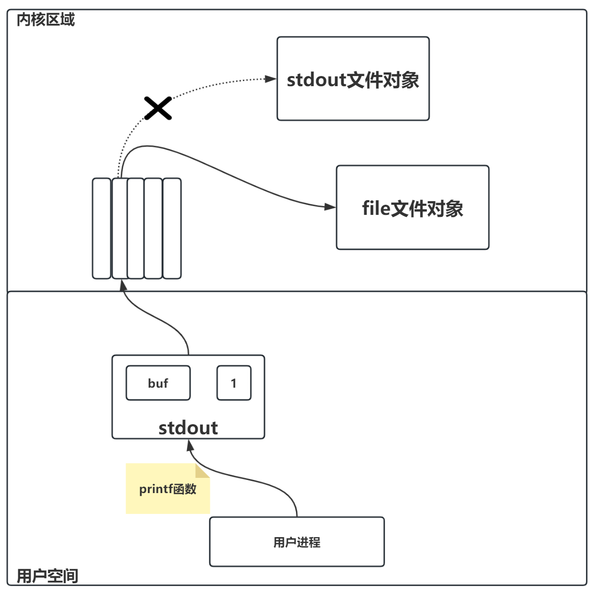
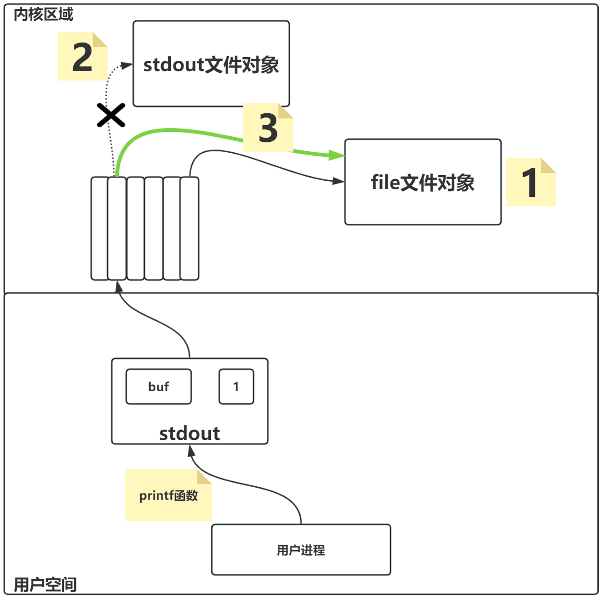

目录流
改变文件的权限
xxxxxxxxxx21// 使用该函数需要包含的头文件2int chmod(const char *pathname, mode_t mode);x1/* Useage: ./01_chmod pathname mode */2int main(int argc, char *argv[]){3 ARGS_CHECK(argc, 3);4 mode_t mode;5 sscanf(argv[2], "%o", &mode ); // %o表示八进制无符号数6
7 int ret = chmod(argv[1], mode);8 ERROR_CHECK(ret, -1, "chmod");9 return 0;10}如何查看类型别名的具体定义
xxxxxxxxxx11xxxxxxxxxx11gcc -E main.c -o main.ixxxxxxxxxx11grep -nE "typedef.*mode_t" main.ixxxxxxxxxx131int main(void){2 size_t size = sizeof(mode_t);3 printf("size of mode_t = %zu bytes\n", size); // %zu是专门提供给size_t类型进行格式化的转换说明4
5 if((mode_t)-1 > 0){6 // 无符号数的-1会溢出成为一个正数7 printf("mode_t是无符号的!\n");8 }else{9 // 有符号数的-1就是一个负数10 printf("mode_t是有符号的!\n");11 }12 return 0;13}获取当前工作目录
xxxxxxxxxx21// 需要包含此头文件调用函数2char *getcwd(char *buf, size_t size);xxxxxxxxxx131/* Usage: ./02_getcwd */2int main(void){3 // 方式1：直接用栈数组作为getcwd返回值数组4 char path[1024] = {0};5 char *p = getcwd(path,sizeof(path));6 ERROR_CHECK(p,NULL,"getcwd");7 printf("cwd = %s\n", path);8
9 // 方式2：动态分配一个堆数组10 // char *path = (char *)malloc(1024); 11 // char *p = getcwd(path,1024);12 // free(path); 13}xxxxxxxxxx91int main(void) {2 char* cwd = getcwd(NULL, 0);3 ERROR_CHECK(cwd, NULL, "getcwd");4
5 puts(cwd);6 // 由调用者负责释放申请的内存空间7 free(cwd);8 return 0;9}改变当前工作目录
xxxxxxxxxx21int chdir(const char *path);xxxxxxxxxx231/* Usage: ./03_chdir pathname */2int main(int argc, char* argv[]) {3 ARGS_CHECK(argc, 2); // 命令行参数必须2个，第二个是要切换的目标目录4
5 // 先获取当前工作目录，然后打印6 char buf[1024] = {0};7 char *ret = getcwd(buf, sizeof(buf));8 ERROR_CHECK(ret, NULL, "getcwd");9 printf("一开始的工作目录是: ");10 puts(buf);11
12 // 改变当前工作目录13 int ret2 = chdir(argv[1]);14 ERROR_CHECK(ret2, -1, "chdir");15
16 // 再次打印当前工作目录17 char *ret3 = getcwd(buf, sizeof(buf));18 ERROR_CHECK(ret3, NULL, "getcwd");19 printf("chdir后的工作目录是: ");20 puts(buf);21
22 return 0;23}创建目录
xxxxxxxxxx31int mkdir(const char *pathname, mode_t mode);xxxxxxxxxx91/* Usage: ./04_mkdir pathname mode */2int main(int argc, char* argv[]) {3 ARGS_CHECK(argc, 3); // 需要三个命令行参数，允许传入一个三位八进制数表示权限4 mode_t mode;5 sscanf(argv[2], "%o", &mode); // 将第三个命令行参数字符串转换成八进制无符号整数6 int ret = mkdir(argv[1], mode);7 ERROR_CHECK(ret, -1, "mkdir");8 return 0;9}删除目录
xxxxxxxxxx21int rmdir(const char *pathname);xxxxxxxxxx81/* Usage: ./05_rmdir pathname */2int main(int argc, char* argv[]) {3 ARGS_CHECK(argc, 2);4
5 int ret = rmdir(argv[1]); // 注意：rmdir 只能删除空目录6 ERROR_CHECK(ret, -1, "rmdir");7 return 0;8}打开目录流
xxxxxxxxxx31// dirent是directory entry的简写，就是目录项的意思2DIR *opendir(const char *name);关闭目录流
xxxxxxxxxx31int closedir(DIR *dirp); xxxxxxxxxx121/* Usage: ./06_dirent pathname */2int main(int argc, char *argv[]){3 // 命令行参数校验4 ARGS_CHECK(argc,2);5 DIR *dirp = opendir(argv[1]);6 // 打开目录流的错误处理7 ERROR_CHECK(dirp,NULL,"opendir");8 // 读目录流的操作9 // 及时释放资源，关闭目录流10 closedir(dirp);11 return 0;12}读目录流
xxxxxxxxxx21struct dirent *readdir(DIR *dirp);dirent结构体
xxxxxxxxxx131// dirent是directory entry的简写，就是目录项的意思2struct dirent {3 // 此目录项的inode编号，目录项中会存储文件的inode编号。一般是一个64位无符号整数（64位平台）4 ino_t d_ino;5 // 到下一个目录项的偏移量。可以视为指向下一个目录项的指针(近似可以看成链表)，一般是一个64位有符号整数6 off_t d_off;7 // 此目录项的实际大小长度，以字节为单位(注意不是目录项所表示文件的大小，也不是目录项结构体的大小)8 unsigned short d_reclen; 9 // 目录项所表示文件的类型，用不同的整数来表示不同的文件类型10 unsigned char d_type;11 // 目录项所表示文件的名字，该字段一般决定了目录项的实际大小。也就是说文件名越长，目录项就越大12 char d_name[256];13};xxxxxxxxxx81DT_BLK // 块设备文件，对应整数值62DT_CHR // 字符设备文件，对应整数值23DT_DIR // 目录文件，对应整数值44DT_FIFO // 有名管道文件，对应整数值15DT_LNK // 符号链接文件，对应整数值106DT_REG // 普通文件，对应整数值87DT_SOCK // 套接字文件，对应整数值128DT_UNKNOWN // 未知类型文件，对应整数值0xxxxxxxxxx11struct dirent *readdir(DIR *dirp);seekdir和telldir函数
xxxxxxxxxx21long telldir(DIR *dirp);xxxxxxxxxx21void seekdir(DIR *dirp, long loc);xxxxxxxxxx301/* Usage: ./06_dirent pathname */2int main(int argc, char *argv[]){3 ARGS_CHECK(argc,2);4 DIR * dirp = opendir(argv[1]);5 // 检查打开目录流是否成功6 ERROR_CHECK(dirp,NULL,"opendir");7 struct dirent * pdirent;8 // 用于记录目录流指针的位置9 long loc;10 while((pdirent = readdir(dirp)) != NULL){11 printf("inode num = %lu, reclen = %hu, type = %u, name = %s\n\n",12 pdirent->d_ino, pdirent->d_reclen,13 pdirent->d_type,pdirent->d_name);14 if(strcmp("file1",pdirent->d_name) == 0){15 // 如果当前的目录项表示文件的名字是file1,那么记录文件指针的位置16 loc = telldir(dirp);17 }18 }19 printf("--------------------------\n"); // 一个代码分隔线20
21 seekdir(dirp,loc); // 目录流指针回到记录位置22 // 获取目录流指针指向的目录项结构体, 并打印信息23 pdirent = readdir(dirp); 24 printf("inode num = %lu, reclen = %hu, type = %u, name = %s\n\n",25 pdirent->d_ino, pdirent->d_reclen,26 pdirent->d_type,pdirent->d_name);27 // 不要忘记关闭流28 closedir(dirp);29 return 0;30}倒带目录流
xxxxxxxxxx21void rewinddir(DIR *dirp);stat系统调用函数
xxxxxxxxxx21int stat(const char *path, struct stat *buf);stat结构体
xxxxxxxxxx91struct stat {2 mode_t st_mode; // 包含文件的类型以及权限信息3 nlink_t st_nlink; // 文件的硬链接数量 4 uid_t st_uid; // 文件所有者的用户ID5 gid_t st_gid; // 文件所有者组的组ID6 off_t st_size; // 文件的实际大小, 以字节为单位7
8 struct timespec st_mtim; /* 包含文件最后修改时间的结构体对象 */9};xxxxxxxxxx41struct timespec {2 __time_t tv_sec; // 时间戳，秒为单位。此类型别名一般就是long类型3 __syscall_slong_t tv_nsec; // 纳秒 - 存储时间戳当中不足秒的部分，用于精准表示时间。此类型别名一般就是long类型4};xxxxxxxxxx61// 错误处理都省略了2DIR *dirp = opendir(argv[1]);3chdir(dir_name); // 切换当前进程的工作目录为dir_name目录4struct dirent* pdirent = readdir(dirp)); // 目录项结构体, dirp是打开的dir_name目录流指针5struct stat stat_buf; // 预先申请一个stat结构体对象6int ret = stat(pdirent->d_name, &stat_buf); // 获取文件的相关信息，相当于给stat_buf结构体对象初始化xxxxxxxxxx11stat_buf.st_mtim.tv_sec; // stat_buf是调用stat函数完成赋值的stat结构体对象xxxxxxxxxx11xxxxxxxxxx21stat_buf.st_mtim.tv_sec; // stat_buf是调用stat函数完成赋值的stat结构体对象2stat_buf.st_mtime; // 等价于上一条代码无缓冲文件流
打开文件open
xxxxxxxxxx51int open(const char *pathname, int flags);5int open(const char *pathname, int flags, mode_t mode);| 标志 | 描述/含义 |
|---|---|
| O_RDONLY | 以只读的方式打开 |
| O_WRONLY | 以只写的方式打开 |
| O_RDWR | 以可读可写的方式打开 |
| O_CREAT | 如果文件不存在，则创建文件。如果不添加此标志，那么文件不存在时，将打开失败 |
| O_EXCL | 仅与O_CREAT连用，单独使用无意义。如果文件已存在，则open失败 |
| O_TRUNC | 如果文件已存在且成功以写入模式打开，则将其长度截断为 0，即删除文件内容。 |
| O_APPEND | 以追加模式打开文件，不能和O_RDONLY或者O_TRUNC连用。 |
close函数
xxxxxxxxxx21int close(int fd);read函数
xxxxxxxxxx21ssize_t read(int fd, void *buf, size_t count);xxxxxxxxxx191// 读文本文件2int main(int argc, char* argv[]){3 ARGS_CHECK(argc, 2);4 // 以读写的形式打开文件5 int fd = open(argv[1], O_RDWR);6 ERROR_CHECK(fd, -1, "open");7
8 // read函数读数据的单位是字节9 // 所以为了方便计算读取字节的数量，常用char数组作为数组buf中转站10 // 为了避免随机值导致输出结果中产生莫名其妙的字符出现，所以将buf数组元素初始化默认零值11 char buf[1024] = { 0 };12 ssize_t sret = read(fd, buf, sizeof(buf));13 ERROR_CHECK(sret, -1, "read");14 // 打印读到的实际字节数以及读到的字符信息15 printf("sret = %ld, buf = %s\n", sret, buf);16
17 close(fd);18 return 0;19}xxxxxxxxxx21void *memset(void *s, int c, size_t n);write函数
xxxxxxxxxx21ssize_t write(int fd, const void *buf, size_t count);1int main(int argc, char* argv[]){2 ARGS_CHECK(argc, 2);3 // 读写模式打开文件4 int fd = open(argv[1], O_RDWR);5 ERROR_CHECK(fd, -1, "open");6 // 将数据段中的字面值字符串写到文件中7 ssize_t sret = write(fd, "howareyou", 9);8 printf("sret = %ld\n", sret);9 close(fd);10 return 0;11}ftruncate系统调用函数
xxxxxxxxxx21int ftruncate(int fd, off_t length);xxxxxxxxxx111int main(int argc, char *argv[]){2 ARGS_CHECK(argc,2);3 int fd = open(argv[1],O_RDWR);4 ERROR_CHECK(fd,-1,"open");5
6 // 改变文件的大小7 int ret = ftruncate(fd,100);8 ERROR_CHECK(ret,-1,"ftruncate");9 close(fd);10 return 0;11}文件映射
mmap函数
xxxxxxxxxx21void *mmap(void *addr, size_t length, int prot, int flags, int fd, off_t offset);munmap函数
xxxxxxxxxx21int munmap(void *addr, size_t length);xxxxxxxxxx361int main(int argc, char *argv[]){2 ARGS_CHECK(argc,2);3 // 以读写模式打开文件4 int fd = open(argv[1], O_RDWR);5 ERROR_CHECK(fd, -1, "open");6
7 // 调整文件大小为5字节8 int ret = ftruncate(fd, 5);9 ERROR_CHECK(ret, -1, "ftruncate");10
11 // 将文件映射到内存中，映射大小为5字节，允许读写，共享映射12 char *p = (char *)mmap(NULL, 5, PROT_READ | PROT_WRITE, MAP_SHARED, fd, 0);13 ERROR_CHECK(p, MAP_FAILED, "mmap");14
15 // 随机访问文件内容16 for(int i = 0; i < 5; ++i){17 printf("%c", p[i]);18 }19 printf("\n");20
21 // 随机修改文件内容22 p[4] = 'O';23
24 printf("-----------------------------\n");25 // 再次随机访问文件内容26 for(int i = 0; i < 5; ++i){27 printf("%c", p[i]);28 }29 printf("\n");30
31 // 先开后关，后开先关32 // 先解除内存映射，再关闭文件描述符33 munmap(p, 5);34 close(fd);35 return 0;36}lseek函数
xxxxxxxxxx31off_t lseek(int fd, off_t offset, int whence);xxxxxxxxxx101while(1){2 ssize_t sret = read(fd,&ch,1);3 if(sret == 0){4 break;5 }6 // 将字符转换成大写字母，先左移1位文件指针，再将字符写回文件7 ch = toupper(ch);8 lseek(fd,-1,SEEK_CUR);9 write(fd, &ch,1);10}内存复制函数
xxxxxxxxxx21void *memcpy(void *dest, const void *src, size_t n);重定向
文件流和文件描述符的关系
fopen 函数实际上在运行的过程中也获取了文件的文件描述符。
xxxxxxxxxx121int main(int argc, char *argv[]){2 ARGS_CHECK(argc, 2);3 // 利用fopen打开一个文件4 FILE *fp = fopen(argv[1], "w+");5 ERROR_CHECK(fp, NULL, "fopen");6
7 // fileno函数用于获取文件流当中的文件描述符8 write(3, "hello", 5);9 ERROR_CHECK(ret, -1, "write");10 close(fp);11 return 0;12}xxxxxxxxxx21// fileno 函数的声明在这个头文件中2int fileno(FILE *stream);xxxxxxxxxx111int main(int argc, char *argv[]){2 ARGS_CHECK(argc, 2);3 FILE *fp = fopen(argv[1], "w+");4 ERROR_CHECK(fp, NULL, "fopen");5
6 // fileno函数用于获取文件流当中的文件描述符7 write(fileno(fp), "hello", 5); // 用fileno函数来获取文件描述符，代替魔法数字8 ERROR_CHECK(ret, -1, "write");9 close(fp);10 return 0;11}标准流和重定向
标准输入流stdin：宏STDIN_FILENO，对应整数值0
标准输出流stdout：宏STDOUT_FILENO，对应整数值1
标准错误流stderr：宏STDERR_FILENO，对应整数值2
xxxxxxxxxx61int main(void){2 printf("stdin = %d\n", fileno(stdin));3 printf("stdout = %d\n", fileno(stdout));4 printf("stderr = %d\n", fileno(stderr));5 return 0;6}
close和重定向的原理
close的作用是关闭了一个文件描述符，只有等到某个文件对象的全部文件描述符都被关闭了，才会考虑释放文件对象（引用计数法）。
但标准流的文件对象，即便所有文件描述符都被关闭了，但一般操作系统也会继续保留它的文件对象（保留的目的当然是等待重新为标准流文件对象分配文件描述符）。
open的作用是打开一个文件，内核会创建文件对象，并分配一个当下可用的最小文件描述符，返还给用户进程。

重定向不是断开/更改用户进程和标准流缓冲区的连接，而是断开/更改标准流缓冲区到外部设备(屏幕、磁盘等)的连接。
dup函数
xxxxxxxxxx21int dup(int oldfd);
xxxxxxxxxx211int main(int argc, char *argv[]){2 ARGS_CHECK(argc,2);3 // 被复制的文件描述符4 int old_fd = open(argv[1], O_RDWR); 5 ERROR_CHECK(old_fd, -1, "open");6 printf("old_fd = %d\n", old_fd); // 37
8 // 复制后得到的新文件描述符9 int new_fd = dup(oldfd);10 ERROR_CHECK(new_fd, -1, "dup");11 printf("new_fd = %d\n", new_fd); // 412
13 // 最终会把helloworld写入同一文件14 write(old_fd,"Hello", 5);15 write(new_fd,"World", 5);16
17 // 关闭文件描述符18 close(new_fd);19 close(old_fd);20 return 0;21}利用dup函数重定向stdout

xxxxxxxxxx211int main(int argc, char *argv[]){2 ARGS_CHECK(argc,2);3 // 先使用printf函数向终端输出一句话4 printf("我们的爱错过就不再回来!\n");5 int fd = open(argv[1],O_RDWR);6 ERROR_CHECK(fd,-1,"open");7
8 close(STDOUT_FILENO);9 // 复制fp文件描述符,但此时给它分配的文件描述符是1，完成重定向操作10 int fd_cp = dup(fd);11 // 下面的输出都将输出到文件里12 printf("fd = %d\n", fd);13 printf("fd_cp = %d\n", fd_cp);14 printf("直到现在我还默默得等待!\n");15
16 fflush(stdout); // 在关闭文件描述符释放文件对象之前，刷新一下标准输出缓冲区，避免数据还留在缓冲区中导致数据丢失17 // 关闭文件描述符18 close(fd);19 close(fd_cp);20 return 0;21}dup2函数
xxxxxxxxxx21int dup2(int oldfd, int newfd);利用dup2函数重定向stdout

xxxxxxxxxx191int main(int argc, char *argv[]){2 ARGS_CHECK(argc,2);3 printf("表示从一楼到四楼的距离!\n"); // 先向终端输出一句话4 int fd = open(argv[1], O_RDWR);5 ERROR_CHECK(fd, -1, "open");6
7 // 关闭标准输出，再让文件描述符1指向fd文件对象，也就是重定向stdout到文件8 int fd_cp = dup2(fd, STDOUT_FILENO);9 // 下面的输出都将输出到文件里10 printf("fd = %d\n", fd);11 printf("fd_cp = %d\n", fd_cp);12 printf("原来只有三年!\n");13
14 fflush(stdout); // 在关闭文件描述符释放文件对象之前，刷新一下标准输出缓冲区，避免数据还留在缓冲区中导致数据丢失15 // 关闭文件描述符16 close(fd);17 close(fd_cp);18 return 0;19}有名管道
创建管道文件
xxxxxxxxxx11mkfifo name.pipe使用管道
xxxxxxxxxx91int main(int argc,char*argv[]){2 int pipe_fd = open("1.pipe", O_WRONLY);3 while(1){4 write(pipe_fd, "hello", 5);5 printf("write once \n");6 sleep(5);7 }8 return 0;9}91int main(int argc,char*argv[]){2 int pipe_fd = open("1.pipe", O_RDONLY);3 while(1){4 char buf[60] = {0};5 read(pipe_fd, buf, sizeof(buf));6 printf("read : %s\n", buf);7 }8 return 0;9}IO多路复用
Select
select的最基本的原理, 就是把要监视的文件描述符, 构建一个文件描述符监听集合。
这个集合交给select, select促使操作系统内核, 通过轮询的方式监听这个文件描述符集合。
直到监听集合中, 至少有一个文件按照条件就绪(条件:预设的监听是读就绪OR写就绪...), 这一次的select监听宣告结束, 并携带就绪的文件描述符集合返回, 继续执行用户书写的代码逻辑。
141// synchronous I/O multiplexing6// 同步 I/O 多路复用7int select(8 int nfds, // 被监听文件描述符集合最大的文件描述符+1 (最大的文件描述符+1)9 fd_set *readfds, // 要监听的: 读操作文件描述符集合10 fd_set *writefds, // 要监听的: 写操作文件描述符集合11 fd_set *exceptfds, // 要监听的: 异常操作文件描述符集合12 struct timeval *timeout // 监听时候的阻塞时间:NULL代表一直等待直到指定就绪,0代表不等待检查文件描述符立即返回13);14// 返回值: 正数表示就绪的文件描述符数量; 0表示监听超时; -1表示是失败51// 构建监听文件描述符:2void FD_ZERO(fd_set *set); // 初始化文件描述符集合3void FD_SET(int fd, fd_set *set); // 向文件描述符集合添加要监听的文件描述符4void FD_CLR(int fd, fd_set *set); // 从文件描述符集合移除一个文件描述符,不再监听移除项5int FD_ISSET(int fd, fd_set *set); // 判断某个文件描述符, 是否在文件描述符集合中调用select之后, select会阻塞进程, 去监听设置的文件描述符状态; 直到监听到至少一个文件描述符就绪, select解除阻塞状态, 并携带就绪的文件描述符返回。
监听集合和监听完毕之后携带的就绪集合, 是同一个fd_set存储。(传入传出参数, 非const指针) (意味着在循环中, 每次都要重置监听集合set)
411int main(int argc,char*argv[]){2 int fd_write = open("1.pipe", O_WRONLY);3 int fd_read = open("2.pipe", O_RDONLY);4 char buf[60];5 // 监听集合6 fd_set set;7
8 while(1){9 // 初始化集合10 FD_ZERO(&set);11 // 添加要监听的文件描述符12 FD_SET(STDIN_FILENO, &set);13 FD_SET(fd_read, &set);14
15 // 调用select: 监听就绪16 int res_select = select(10, &set, NULL,NULL, NULL);17
18 if(FD_ISSET(fd_read, &set)){19 bzero(buf, sizeof(buf));20 int read_num = read(fd_read, buf, sizeof(buf));21 if(read_num == 0){22 printf("对方断开链接 \n");23 break;24 }25 printf("UserA: %s", buf);26 }27 if(FD_ISSET(STDIN_FILENO, &set)){28 bzero(buf, sizeof(buf));29 int read_stdin = read(STDIN_FILENO, buf, sizeof(buf));30 if(read_stdin == 0){31 // 用户按下ctrl+d; 输入文件终止符; 终止标准输入; read返回032 break;33 }34 write(fd_write, buf, sizeof(buf));35 }36 }37
38 close(fd_write);39 close(fd_read);40 return 0;41}